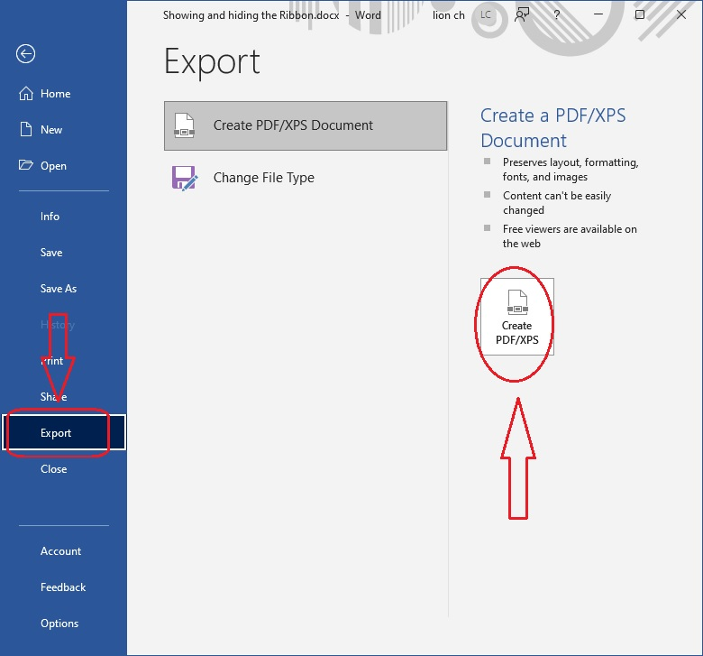

មេរៀនទី-៤
សេចក្តីផ្តើម (Introduction)
គ្រប់ពេលដែលយើងផ្តើមបង្កើតការងារថ្មីនៅលើ Word, យើងត្រូវយល់ដឹងអំពីការរក្សាទុក Save ឯកសារការងារ ដើម្បីអោយយើងអាចធ្វើការដើម្បីកែសម្រួលឡើងវិញពេលក្រោយ, ពីមួយជំនាន់ទៅមួយចំនាន់ យើងអាចធ្វើការរក្សាទុកឯកសារនៅលើកុំព្យូទ័រ, យើងក៏អាចធ្វើការ រក្សាវាទុកនៅលើ Cloud បានផងដែរ ដោយប្រើ Onedrive, យើងអាចធ្វើការបញ្ជូន ឬចែករំលែងឯកសារដោយផ្ទាល់ចេញពី កម្មវិធី Wordបាន។
យល់ដឹងអំពី (Save និង Save As)
នៅក្នុងកម្មវិធី Wrod, មានពីររបៀបក្នុការរក្សាទុក ឯកសារ គឺ Save និង Save As , ជម្រើសពីរនេះមានលក្ខណះស្រដៀងគ្នា, ខុសក្នាតិចតួចប៉ុណ្ណោះ
👉 មុខងារ Save: នៅពេលដែលយើងបង្កើតការងារថ្មី ឬធ្វើការកែសម្រួលនៅលើឯកសារចាស់ យើងត្រ្រូវការប្រើឧបករណ៏បញ្ជា Save ដើម្បីធ្វើការរក្សារាល់ការកែសម្រួលរបស់ឯកសារយើង, សម្រាប់ឯកសារទើបបង្កើតឡើងថ្មី ដំបូង ពេលយើងចុចលើ ឧបករណ៏បញ្ជា Save តម្រូវអោយយើងត្រូវជ្រើសយកទីតាំងណាមួយ ដើម្បីរក្សាទុក បន្ទាប់ពីនោះវានឹងធ្វើការ រក្សាទុកដោយ ស្វ័យប្រវត្តិ រាល់ការចុចបន្ទាប់។
👉 មុខងារ Save As: យើងប្រើ Save As ដើម្បីធ្វើការចម្លងឯកសារ ទៅដាក់លើទីតាំងថ្មី ដោយអាចធ្វើការ ប្តូរឈ្មោះបាន សម្រាប់ឯកសារចាស់គឺរក្សាទម្រង់ដើមនៅដដែល។
👉 អំពី Onedrive គ្រប់កម្មវិធីទាំងអស់នៅក្នុង Microsoft Office រួមទាំង Word មានមុខងាររួចជាស្រេច ក្នុងការរក្សាទុក ក៏ដូចជាការចែករំលែក ឯកសារនៅលើ អនឡាញ, នោះគឺការប្រើប្រាស់ Onedrive ដែលជាទីតាមផ្ទុកមួយនៅលើ អនឡាញ សម្រាប់ឯកសាររបស់យើង។ ប្រសិនបើអ្នកចង់ប្រើប្រាស់ OneDrive ត្រូវប្រាកដថាអ្នកបាន Log in ចូល នៅក្នុង Word ដោយប្រើ Microsoft Account របស់អ្នក។
ការរក្សាទុកឯកសារ (To Save Document)
វាពិតជាមានសារះសំខាន់ ក្នុងការរលឹកដឹងរាល់ពេល ចំពោះការប្រើ ឧបករណ៏ បញ្ជា Save, ដើម្បីការពាររាល់ការបាត់បង់ ទៅលើការកែប្រែណាមួយនៅលើ ការងារ ។
👉 ចុចយក File tab ដើម្បីចូលទៅកាន់ ផ្ទាំង Backstage view

👉 ចុចយក Save ឬ Save AS សម្រាប់ការ រក្សាទុកឯកសារ ជាដំបូង
👉 ចុចយក Browse, ផ្ទាំង dialog box នឹងបង្ហាញដូចរូបខាងក្រោម។
- ជ្រើសទីតាំងណាមួយដើម្បីធ្វើការ រក្សាទុកឯកសារនៅលើកុំព្យូទ័រ ដោយចង់ចាំទុក ដើម្បីធ្វើការបើកឡើងវិញពេលក្រោយ
- ក្នុង ប្រអប់ File Name: ដាក់ឈ្មោះសំគាល់ឯកសារ បន្ទាប់ចុច យក Save
👉 សម្រាប់ការងារបន្តនៅលើឯកសារចាស់របស់ យើង ត្រូវឧស្សារចុចលើ ឧបករណ៏ Save ដែលជាប់នៅលើ Quick toolbar ឬ ចុច Crtl+S ដើម្បីជាវៀងការបាត់បង់ឯកសារទៅវិញក្នុងប្រកាណាមួយ។
ថតចម្លងឯកសារដោយប្រើ Save As
👉 ប្រសិនបើយើងចង់ធ្វើការចម្លងឯកសារថ្មីដោយរក្សាឯសារចាស់ជាទម្រង់ដើម,
ជាឧទាហរណ៏ យើងមាន ឯកសារមួយ ដាក់ឈ្មោះ file1, យើងអាចប្រើ Save As ដោយដាក់ឈ្មោះ ជា file2
យើងអាចធ្វើការកែប្រែគ្រប់ទម្រង់ទាំងស្រុងបាននៅលើ file2 ដោយរក្សារ file1 ជាឯកសារដើមដោយមិនមានការកែប្រែ។
- ដើម្បីធ្វើដូចនេះ យើង គ្រាន់តែចុចយក Save As នៅក្នុង Backstage ដោយអនុវត្តន៏ដូចទៅនឹងការរក្សាទុកឯកសារដំបូង
ដោយគ្រាន់តែដូរឈ្មោះឯកសារថ្មី នៅក្នុង file name ជាការស្រេច។
ប្តូរ ទីតាំងដើម (Save location)
👉 ប្រសិនបើយើងចង់ធ្វើការ ប្តូរទម្រង់ទីតាំងដើមនៅលើកុំព្យូទ័រ ត្រូវអនុវត្តន៏ដូចជំហា៊នខាងក្រោម
1/ ចុចនៅលើ File tab ដើម្បីចូលទៅកាន់ Backstage view
2/ នៅលើ Backstage view ចុចយកពាក្យ option មើលរូបខាងក្រោម៖
3/ ផ្ទាំង dialog box នឹងបង្ហាញដូចខាងក្រោម៖
-ចុចលើ Save tap
-ចុច ធីក លើប្រអប់ Save to computer by defult
-ចុច យក ok
Auto Recover
កម្មវិធី Word មាន folder បម្រុងសម្រាប់ រក្សាទុកឯកសារដោយស្វ័យប្រវត្តន៏ រាល់ពេលយើងកំពុងធ្វើការលើវា,
ប្រសិនបើយើងភ្លេច ធ្វើការ save ទៅលើឯកសា ឬដំណើរការកម្មវិធី គាំង យើងអាចធ្វើការទាញយក ឯកសារមកវិញ
បានតាមរយះ AutoRecoer:, ដើម្បីប្រើ AutoRecover មើលការណែនាំដូចខាងក្រោម៖
1/ រាល់ពេលកម្មវិធីគាំងមិនដំណើរការ យើងធ្វើការបិទកម្មវិធី ពេលបើកឡើងសារជាថ្មី ផ្ទះ Document Recover
និងបង្ហាញឡើងនៅផ្នែកខាងឆ្វេង
2/ ចុច បើកនៅ file ឯកសារនឹងត្រូវបានទាញយកមកវិញ
👉 ចំណាំ៖ ជាទូទៅ Word ធ្វើការ save រៀងរាល់ 10 នាទីម្តង ប្រសិនការផ្លាស់ប្តូរនៅលើឯកសាររបស់យើងនៅក្រោម 10 នាទី នោះវាមិនត្រូវបានរក្សាទុកនោះទេ។
👉 ប្រសិនបើ file Autosave មិនត្រូវបានបង្ហាញចេញ យើងចូលទៅកាន់ Backstage View ដោយចុច ទៅពាក្យ Info បន្ទាប់មកយក Manage Document និង ចុចយកពាក្យ Recover Unsaved Documents សូមមើលរូបខាងក្រោម៖
Export Document
ជាទូទៅ word document ត្រូវបាន រក្សាទុកជាប្រភេ .docx file type (extension), ប្រសិនបើយើង ចង់ផ្លាស់ប្តូរ ប្រភេទ file type ដើម អោយទៅជា file ផ្សេង ដូចជា PDF ឬ Word 97-2003 គឺយើងធ្វើបានដោយប្រើ មុខងារ បញ្ជា Exprot
របៀបកែប្រែ Word Document ទៅជា PDF file
កាកែប្រែ word document ទៅជា Adobe Acrobat document, ដែលយើងសម្គាល់ជា PDF
file, ដើម្បីប្រើប្រាស់ក្នុង ល័ក្ខខ័ណ្ឌពិសេសណាមួយ ដូចជាការចែករំលែកទៅកាន់អ្នកណាម្នាក់ដោយមិនតម្រូវការកម្មវិធី word, គឺអាចអានបាន ក្នុង
ល័ក្ខខ័ណ្ឌមិនអាចកែប្រែ។
👉 ចុចលើ File tab ដើម្បីចូលទៅកាន់ Backstage View ជ្រើសយក Exprot,
បន្ទាប់មក យក Create BDF/XPS.

👉 ផ្ទាំង dialog box នឹងបង្ហាញចេញដូចខាងក្រោម, សូមធ្វើការជ្រើសរើសយកទីតាំងដែលចង់ ដាក់ PDF file, កំណត់ឈ្មោះ file នៅក្នុង ប្រអប់ file name, បន្ទាប់មកចុចយក Publish
Edit PDF file
PDF Documnet បង្កើតឡើងដើម្បីតែអានប៉ុណ្ណោះ យើងមិនអាចធ្វើការកែប្រែបានទេ, វាមានភាពងាយស្រួលក្នុង
ការផ្ញើរជា file PDF ទៅអោយនណាម្នាក់ដើម្បី អាន ពីព្រោះវាអាចបើកដំណើរការបានស្ទើរគ្រប់ device ដោយមិនតម្រូវកម្មវិធី, ក្នុងហេតុផល
ណាមួយប្រសិនបើចង់ធ្វើការកែប្រែ PDF file សម្រាប់ office Word ជំនាន់ថ្មី អាចអោយយើងធ្វើការកែបាន ដោយអនុវត្តន៏ដូចខាងក្រោម៖
👉 ចុចលើ File Tab ដើម្បីចូលទៅកាន់ Backstage Wiew
👉 (1) ជ្រើសយក Open, (2) ចុច Browse
👉 រកទីតាំង PDF File ចុច Open
👉 ផ្ទាំង dialog box នឹងបង្ហាញចេញដូចខាងក្រោម, ចុច OK
របៀបកែប្រែ Word Document ទៅជា ប្រភេទ file ផ្សេង
👉 ពេលខ្លះក៏ត្រូវកែប្រែឯកសារដើមរបស់យើងអោយទៅជា ប្រភេទឯកសារផ្សេងផងដែរ ដូចជាប្រភេទ Word97-2003 ក្នុងល័ក្ខខ័ណ្ឌ ចង់ចែករំលែកទៅកាន់អ្នកដែលកំពុងប្រើប្រាស់ កម្មវិធី Word ជំនាន់ចាស់
👉 ចុចលើ File tab ដើម្បីចូលទៅកាន់ Backstage View ជ្រើសយក(1) Exprot, បន្ទាប់មក យក (2) Change File Type. ជ្រើស(3) Document type ចុចយក(4) Save As
ផ្ទាំង dialog box និងបង្ហាញដូចខាងក្រោម
(1) ជ្រើសរកទីតាំង រក្សា ឯកសារ
(2) File Name បញ្ចូលឈ្មោះសម្គាល់ ឯកសារ
(3) ចុច យក Save
👉 Save as type ជាទីតាំងជ្រើសប្តូរ ប្រភេទ file (extension) បានផងដែរ